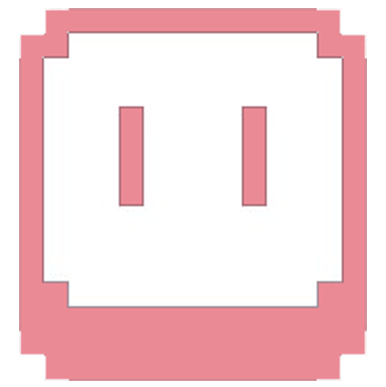
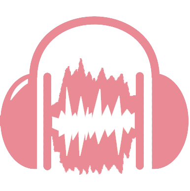
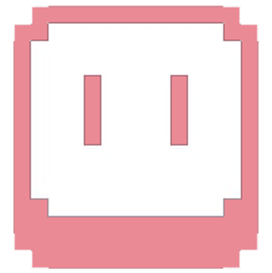
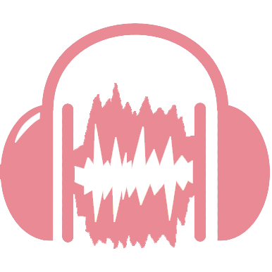

Hi, I'm Ari-Pekka
Welcome to my cv / portfolio where I'll show what I've done and what I'm all about. You'll find game projects which are in various stages of completion. My endgame is to be a senior game designer. I'm an designer, and bughunter who has passion to learn all the ins and outs of the game development.
Skills Proficiencies Work samples Contact and social media 


